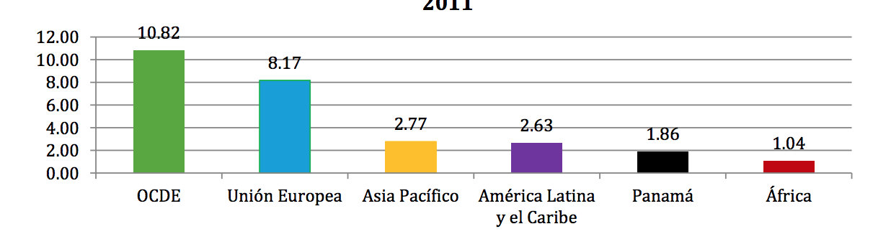
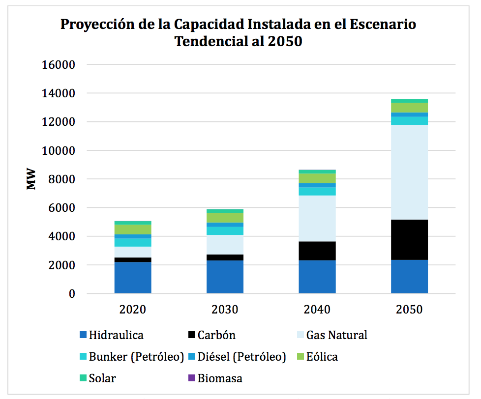
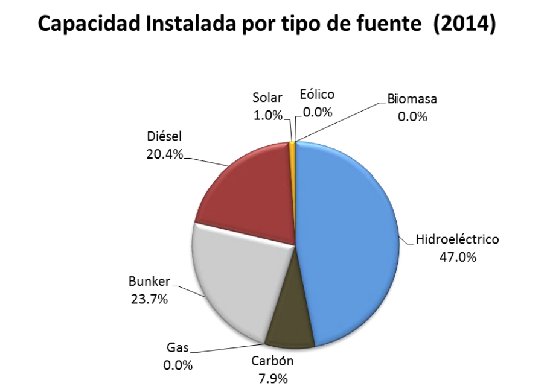
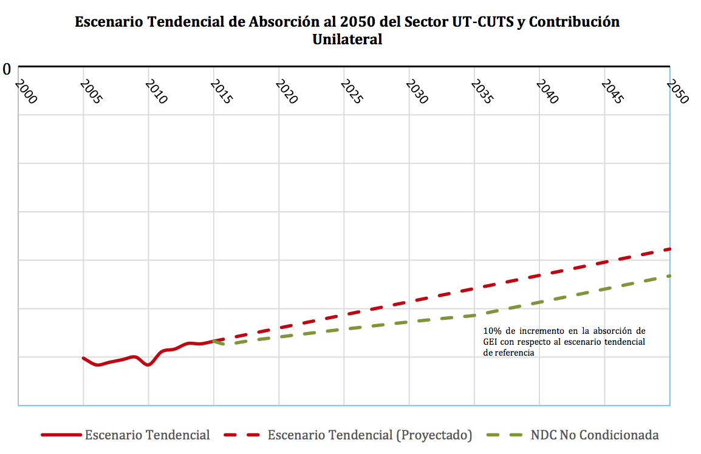
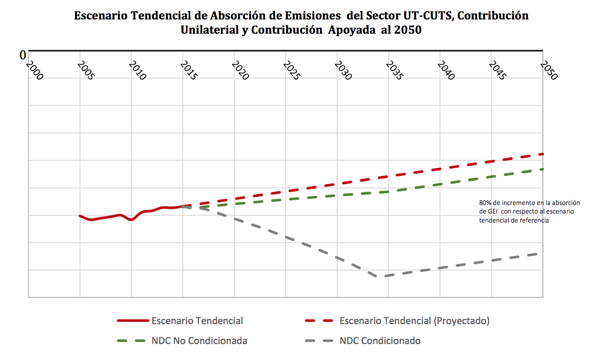

April, 2016
The Panamanian State recognizes that climate change is a major global environmental threat affecting the population, ecosystems and all productive sectors of the economy, as well as recognizing its shared but differentiated responsibility for participation in stabilizing Greenhouse gas (GHG) concentrations in the atmosphere to a level that would prevent dangerous anthropogenic interference with the global climate system.
Historically, the country's contribution to global emissions of greenhouse gases has represented 0.02%; similarly, per capita GHG emissions indicate that the country does not contribute significantly to climate change but is highly vulnerable to the adverse effects of climate change. Therefore, it has as a goal concrete actions to address this global challenge, considering the challenges that this means, not only for the country, but for the world. Panama ratified the Kyoto Protocol in June 1998 and recently ratified its commitment to approve the Doha Amendment through Law 38 of 3 June 2015.
Law 8 of March 25, 2015, which creates the Ministry of Environment, adds Title XI with two chapters in reference to Adaptation and Mitigation of Climate Change, in which the State assumes in collaboration with other institutions a national strategy and initiatives for Increase the country's resilience to the adverse effects of climate change and to promote the national transition towards low-carbon economic development.
Currently, approximately 60% of the national electricity grid's installed capacity is made up of renewable sources, of which 52% come from water sources, 7% from wind and 1% from solar sources (National Energy Plan 2015-2050). National efforts reflected in the Nationally Determined Contribution (NDC) to climate change mitigation in the Republic of Panama will increase the installed capacity by 20% in the energy sector from non-conventional renewable sources by 30% Wind and solar, and in the UT-CUTS sector, with the assistance of the Green Climate Fund through a pay-for-performance scheme and other financial mechanisms, will allow the increase of the carbon absorption capacity by 10% with respect to the reference scenario to 2050; And if the country receives international support in means of implementation, absorption capacity may increase up to 80% over the reference scenario to 2050.
Panama's NDC will stimulate GHG reduction by the public and private sector, as well as provide flexibility and incentives to promote the transition to a low carbon economy. Notwithstanding the country's efforts in climate-smart investments, financial support is required to move the country towards climate-resilient, low-emissions development.
The Conference of the Parties to the United Nations Framework Convention on Climate Change (COP21) in December 2015 (COP21), through its decision 1CP / 21, reiterates its invitation to all Parties, which have not yet done so, to the Secretariat its Nationally Determined Contributions (NDC) at the national level to achieve the Convention's objective as set forth in its Article 2 as soon as possible in a manner that increases the clarity, transparency and understanding of the NDCs. In this context, Panama analyzes the potential for national mitigation and possible policy implementation measures in the Energy and Land Use, Land Use Change and Forestry (UT-CUTS) sectors, and formulates its NDC to mitigation Of Climate Change, taking into account their national circumstances and historical emissions.
The Panamanian State, through Law 8 of March 25, 2015, recognizes that climate change is a significant global environmental threat that affects the population, ecosystems and all productive sectors of the economy, as well as Recognizes its shared but differentiated responsibility for participation in the stabilization of greenhouse gas (GHG) concentrations in the atmosphere at a level that would prevent dangerous anthropogenic interference with the global climate system
Panama presents its Nationally Determined Contribution with the objective of supporting the global effort to keep the average global temperature rise well below 2 ° C with respect to pre-industrial levels and to continue efforts to limit that temperature increase to 1 , 5 ° C with respect to pre-industrial levels.
In an effort to promote transparency, environmental integrity, accuracy, comparability and consistency, Panama will increase its efforts to avoid double counting of GHG emissions.
Consistent with the National Climate Change Policy of Panama, which indicates that the issue of climate change and its effects on the population and the territory should be adequately managed at the national level, in accordance with the provisions of the UNFCCC , The NDC of the Republic of Panama is the result of a national effort led by the Ministry of the Environment (MIAMBIENTE), with the support of the National Committee for Climate Change in Panama (CONACCP) for its elaboration and consultation as part of the strategy Five-year period of low-carbon economic and social development.
The Republic of Panama has a total area of 75,031.49 km2, located in the region Central America, between the coordinates: 7 ° 12'07 and 9 ° 38'46 of Latitude Norte and 77 ° 09'24 and 83 ° 03'07 of longitude west, bordering Costa Rica in the west and Colombia in the East. The territorial sea surface is 319,823.9 km2, including the right of the bed, subsoil, and airspace. The political-administrative division is composed of: 10 provinces, 77 districts, 3 indigenous counties considered provinces and 2 counties considered corregimientos. According to the latest Population and Housing Census of 2010, the country has a population of 3, 405, 813 inhabitants.
The Gross Domestic Product (GDP) of the Republic of Panama accounted for 52,565 million Balboas by 2015 with a real GDP growth rate of 6.5%. According to the Strategic Plan of Government (PEG) 2015-20191. Panama is one of the countries that has had the highest economic growth in the continent, reaching values of more than 12% of GDP growth in 2007, as shown in Chart 1, so that the decoupling of economic growth from Emissions is a priority issue. The aim is to reorient and counteract the growth of emissions in various sectors through measures such as energy efficiency, electrification of public transport (expansion of the Panama Metro network) and diversification of the energy matrix, among others .
Graph N ° 1: Growth of GDP in the different economic blocks and Panama2
Source: World Development Indicators, World Bank (2015)
GDP growth has been driven by a series of public and private investments, which generated the need to increase the supply of electricity. For this reason, the country plans to supply the increase in this demand, taking into account social, environmental and economic perspectives based on electricity as an enabling tool for sustainable development; So the development of the electricity sector must accompany the country's sustainable economic growth in the coming years.
Graph N ° 2: Behavior of the Energy Intensity in the economic blocks and Panama3

Source: World Development Indicators, World Bank and International Energy Agency
The energy intensity indicates the cost invested in dollars per country to convert energy into wealth, is represented by the variables of energy consumption and Gross Domestic Product (GDP). In this sense, Graph 2 shows that during the last years, the Republic of Panama has made a series of investments in the sector of infrastructure, commerce and services that have allowed the growth of the economy reflected in the Internal Product Gross (GDP), where energy demand has increased, it reflects a generation of wealth.
Graph N ° 3: Installed Capacity of Renewable Energies in the economic blocks and Panama to 2012.

Source: International Energy Agency, Year 2012
As Graph 3 shows, developing regions have less diversification of the electricity matrix. In Panama, 100% of electricity generation through renewables came from water sources; Which increased the vulnerability of the Panamanian electricity sector and economy by relying heavily on a single source of renewable generation, particularly during extreme weather events such as droughts or the El Niño phenomenon.
Historically, the country's contribution to global emissions of greenhouse gases has represented 0.02% (see Figure 4); Similarly, per capita GHG emissions (see Figure 5) indicate that the country does not contribute significantly to global warming, however, it is highly vulnerable to the adverse effects of climate change. Therefore, it has as a goal concrete actions to address this global challenge, considering the challenges that this means, not only for the country, but for the world. Panama has been a party to the Kyoto Protocol since June 1998 and recently reaffirmed its commitment to approve the Doha Amendment through Law 38 of 3 June 2015.
Graph N ° 4: Global CO2 Emissions per Year (1950-2011)4

Source: DC: World Resources Institute. Available at: http://cait2.wri.org , World Development Indicators, World Bank.
Graph N ° 5: Per capita Global Emissions of tCO2 per Year (1950-2011)5

Source: DC: World Resources Institute. Available at: http://cait2.wri.org , World Development Indicators, World Bank.
The National Policy on Climate Change, its principles, objectives and lines of action were approved by Executive Decree No. 35 of February 26, 2007, and its general objective was To properly manage at the national level the theme of Climate Change and The effects it may have on the population and the territory, in accordance with the provisions of the United Nations Framework Convention on Climate Change, the Kyoto Protocol, the Political Constitution of the Republic of Panama and the General Environmental Law.
The National Climate Change Committee (CONACCP) was created on January 9, 2009 in support of the then National Environment Authority (ANAM), now the Ministry of the Environment, for the implementation and monitoring of the National Policy on Climate Change.
The most recent milestone in national climate change policy is the promulgation of Law 8 March 2015, where ANAM is raised at ministerial level, thus creating the Ministry of the Environment and where the State recognizes that climate change is A major global environmental threat affecting the population, ecosystems and all productive sectors of our economy. It recognizes its shared but differentiated responsibility for participation in the stabilization of GHG concentrations in the atmosphere at a level that would prevent dangerous anthropogenic interference with the global climate system. For this, MIAMBIENTE has the responsibility to establish the necessary mechanisms to attract financial and economic resources, through national and international instruments that promote the transition towards low economic development in GHG emissions.
The Panamanian State, in order to initiate the transition towards a low emissions and resilient economic development to climate change and as part of the prioritization of sustainable development in the framework of article 4 of the UNFCCC, made investments in infrastructure that contributes To GHG reductions, adapted to the new climatic scenarios (FAR 2014). The country is currently investing USD 6 billion in projects related to water security as well as USD 1.5 billion in the energy sector for the extension of the electric transmission system and USD 5.22 billion in the enlargement project Of the Panama Canal, shortening the navigation distance of approximately 5% of world trade, reducing the carbon emissions of the international maritime sector. In addition, the country has a Nationally Appropriate Mitigation Actions Portfolio (NAMA) of 11 multisectoral, competitive, harmonious and sustainable public and private sector initiatives; Where the NAMA Sustainable Urban Mobility is one of the national priorities.
On the other hand, the country serves as the operational headquarters for regional humanitarian aid, applied research and development efforts. These efforts include the Humanitarian Hub, the Center for Water for the Humid Tropics of Latin America and the Caribbean (CATHALAC), the Center Regional Meeting for the Western Hemisphere of the RAMSAR Convention (CREHO) and the International Center for REDD + Implementation (ICIREDD). The Humanitarian Assistance Hub for Latin America operated from the Republic of Panama, an initiative born of the commitment of the national government to execute a policy in the service of global development and seek the possibility of acting as a regional facility for rapid multilateral response to natural disasters And climate change.
Panama has maintained and maintains active participation and commitment of State at national and international level. In September 2014, the Panamanian government, during its participation in the Summit on Climate Change, held at the United Nations, highlighted the country's lines of action in the face of the challenges of climate change, articulated around the strengthening of institutionality; The diversification of the energy matrix; Management and restoration of watersheds; Protection, conservation and management of biodiversity; The construction of solid waste treatment plants to eliminate landfills; The development of energy efficient mass transit systems) and the reforestation of 1,000,000 hectares over the next 20 years.
Additionally in December 2015 at the meeting of heads of states during COP21, he stated that Through the Panama Canal and its expansion project, which will culminate successfully in 2016, the Panamanian State makes important investments to promote a friendly international trade with The environment, shortening the navigation distance of 5% of world trade, which translates into a significant reduction of the carbon emissions of the international maritime sector. This reaffirms the commitment of the National Government to mitigate climate change and move towards a low carbon system.
The commitment of the State Administration has formally materialized in a Government Plan that distinguishes six main axes of strategic action. The sixth axis reflects the commitment to the environment, as it focuses on: Respect, defense and protection of the environment ('Healthy environment for all'), with emphasis on comprehensive environmental sector reform goals with citizen participation; Development of public policies in harmony with the environment; Disaster management, mitigation and adaptation to climate change, and protection and rescue of biodiversity.
The Strategic Government Plan (PEG) 2015-2019 orients the priority lines of action for the recently created Ministry of Environment. Within the framework of the economic and social strategy of the PEG, the importance of supporting more strongly growth and inclusion sectors within which the forestry sector, currently lagging behind is indicated, but with a great potential to generate An important change from the economic and social point of view. Under the scope of the PEG regarding the environmental sector, it is recognized that the loss of native forest cover is one of the main problems affecting the country and therefore, among other measures, to consider the fight against climate change and its Effects as a fundamental axis of government action, curbing deforestation and restoring vegetation cover to avoid desertification and reducing existing vulnerability through the development and implementation of adaptation and mitigation measures. Finally, the Government Strategic Plan establishes as explicit indicators of success the approval of the new Forestry Law and the implementation of the Alliance for the Million of Reforested Hectares as part of the National Strategy for Reducing Emissions from Deforestation and Forest Degradation (REDD +), equivalent to reforesting 13% of the country's surface.
As a sign of commitment in the fight against climate change, a framework of action was defined to adjust existing paradigms and concretely reflect the lines of action required to strengthen the national economy through the implementation of transformational initiatives that will unlink the Economic growth of the increase in GHG emissions. These lines of action aim to increase the adaptive capacity of the most vulnerable populations and to promote the transition towards a low emission development model.
This axis outlines a set of actions that, based on national circumstances, will enable Panama to contribute responsibly to the ultimate goal of the UNFCCC and to reduce its vulnerability to the adverse effects of climate change, through prioritization and implementation Of specific adaptation measures. This strategy includes three components: 1) adaptation, 2) low emission development, and 3) capacity building and technology transfer. For each of these components, priority was given to sectors and lines of action to increase their resilience, reduce their vulnerability to the adverse effects of climate change and facilitate the country's transition to a low greenhouse gas emissions economy.
According to the Second National Communication to the UNFCCC, presented in 2011 with data from the year 2000, the sectors of land use change (specifically the conversion of forests and grasslands) and energy are those that have a greater contribution in the GHG emissions from the country, since they together contribute with 97.75% of the CO2 emissions (Graph 6). In terms of methane emissions (CH4), both sectors contribute 31% of the national total, although total domestic CH4 emissions account for about 14% of total emissions. The national total of CO2 emissions was estimated at 26, 402,210 tonnes for the year 2000
Graph N ° 6: CO2 emissions by sector

Source: Second National Communication on Climate Change. Year 2000, Panama 2010.
It should be mentioned that the UT-CUTS sector is also the largest sink, causing the sector to absorb more GHG than it emits, thus achieving the country a net sink of carbon dioxide, as shown in Figure 7 below
Graph N ° 7: Balance of CO2 Emissions and Absorption

Source: Second National Communication on Climate Change. Year 2000, Panama 2010.
In energy terms, electricity demand in the country is expected to increase by more than 600% in the period 2014-2050, so there is a National Energy Plan 2015-2050. This demand expects to be satisfied with a wide range of technologies including small- and medium-scale hydroelectric plants, renewable energy such as wind and solar photovoltaic as well as natural gas and coal plants. In addition to having the opportunity to introduce more renewable sources to the energy matrix, early action with energy efficiency measures can reduce the need to install new generation plants.
Graph N ° 8: Projection of the growth of the installed capacity to 2050 (BAU trend scenario, for its acronym in English).

Source: National Energy Plan 2015-2050, National Secretariat of Energy, 2015
Graph 8 shows the trend scenario for electricity generation, where 67.0% will be covered by thermal energy, 22.9% by water sources, and 10.1% by other renewable sources such as solar and wind.
As regards the Land Use, Land Use Change and Forestry sector, this represents a net absorption, ie it acts as a GHG sink. However, gross emissions associated with this sector constitute almost 80% of the national total. Associated with the above, the main source of emissions is given by deforestation, which according to the preliminary figures of the GHG inventory with base year 20136, would be at a net annual average value for 2013 of 10,868 hectares, for this same Year the UT-CUTS sector represents an absorption of 28.6 million tCO2e.
The Nationally Determined Contribution to Mitigation includes the Energy and UT-CUTS sectors, through measures to increase other sources of renewable energy such as solar and wind, reforestation and forest recovery.
The NDC of Panama contemplates the achievement of the established goals with national contribution for both the energy sector and the UT-CUTS sector. The ambition in the UT-CUTS sector for international support can be increased.
For the purposes of contributing to the mitigation of Panama, we analyzed the energy sector focused on the energy industries sub-sector, which refers to the production of electric energy. Emissions from this sub-sector can be reduced in two main ways: 1) By reducing the emission factor of the electricity grid, and 2) by reducing demand, which impacts generation needs and speed in which the electricity generation network should be expanded.
The focus of the contribution in this sub-sector is in the plans of expansion of the electrical generation infrastructure specifically with the increase of the generation from other renewable sources, like the wind and the solar, by the year 2050.
Emissions of the Sector in the National Context
According to the latest National Communication to the UNFCCC, the energy sector contributes 17.3% of national CO2 emissions. Within the sector, the sub-sector of the energy industries (electricity sub-sector) contributed 19.4% (see Graph 9).
Rapid economic growth and increasing access to energy are the main reasons for the expected increase in electricity demand. The National Energy Plan 2015-2050 projects that the Panamanian economy will continue to grow at an average rate of around 4.6% until 2050 and estimates that by 2034, 100% of the population will have electricity.
Graph N ° 9: Emissions from the Energy Sector by Subsector

Source: Second National Communication on Climate Change. Year 2000, ANAM, 2010
Graph N ° 10: Installed Capacity in Panama year 2014

Source: National Energy Plan 2015-2050, National Secretary of Energy, 2015
Electricity generation in 2014 came in 52% of fossil fuels (see Chart 10), mostly bunker, diesel and coal. These were responsible for around 9, 600,000 tCO2eq generated by the electricity sub-sector, according to the National Energy Plan 2015-2050 prepared by the National Energy Secretariat.
According to the national GHG inventory with base year 2000, the UT-CUTS sector presents a net absorption of 7.04 million tCO2eq7, ie it acts as a GHG sink. Gross emissions associated with this sector constitute almost 80% of the national total. Associated with the above, the main source of emissions is given by deforestation, which according to the preliminary figures of the GHG inventory with base year 20138 would be at a net annual average value of 10,868 hectares. For the same year, this sector represents an absorption of 28.6 million tCO29. As indicated in Graph 11, this sector has had a constant behavior for the last 16 years, acting as a carbon sequestrator.
Graph N ° 11: Net Emissions of the UT-CUTS Sector 1994-2013

Source: MIAMBIENTE, 2016
Graph 11 shows the evolution of the behavior of the UT-CUTS sector, from being an emitting sector to a CO2 sequestration sector. This is due to two factors: a) the establishment of secondary forests on land that were under agricultural use and abandoned because in recent years, there was a migration from the countryside to the city in search of new job offers and, in turn, And (b) reduction of deforestation, associated with the implementation of policies and programs including the ecological crime law and environmental awareness programs, the creation of communes and collective indigenous territories, protected areas and The strengthening of institutions that have environmental responsibilities, in addition to the generation and application of regulations in this area, have contributed to a notable decrease in the rate of deforestation.
Measures and Policies in the Energy Sector
Panama has programs related to mitigation and adaptation to climate change, within which the energy sector is addressed. The lines of action contemplated within this sector are the following:
Unilateral Contribution in the Energy Sector
The Nationally Determined Contribution to the mitigation of the energy sector in Panama will be to increase the percentage of electricity generation through other sources of renewable energy such as solar, wind and biomass by 30% in 2050 with respect to 2014. As seen in Graph N ° 12, the scenario with NDC for renewable energies from these sources, shows that by 2030 its share in the power matrix will be 15% and by 2050 30%.
Graph N ° 12: Participation of Types of Renewable Energy Sources in the Electricity Matrix

Source: MIAMBIENTE, 2016
Description of Measures in the Energy Sector
To achieve a 30% increase in other renewable energy sources for the 2015-2050 period, Panama will have to rely on Law 8 of March 25, 2015 and the National Energy Plan 2015-2050, specifically in the line of action that contemplates the decarbonization of the electrical matrix.
Panama has wind and solar potential available in the country. Several sites were identified that meet the characteristics necessary for the installation of wind turbines or solar panel systems for their optimum performance; As well as the private sector has shown its interest in promoting the development of these technologies at the national level.
By January 2016, according to the Public Services Authority (ASEP), there were definitive licenses for the installation of 1,184.1 megawatts (MW) of other renewable energies such as solar and wind, equivalent to 41.8% of installed capacity in 2014. Indicates that the electricity sector has started the preparatory process to have a low GHG emissions economy.
In addition, the NDC relies on the robust regulatory framework for electricity generation through other renewable energies by having a group of legislation promoting them at the national level:
Options to Increase Ambition in the Energy Sector
For the installation of electricity generation infrastructure, ASEP has identified and granted provisional licenses for the construction of projects that will generate an installed capacity of 2,083.92 MW with other types of renewable energy sources, in addition to the installed capacity of 1,184.1 MW that already count with definitive license.
These projects require the continuation of standard processes for planning, construction and operation, and although some are in their initial design stage, it is evidence of Panama's great potential to increase the percentage of other types of renewable energy sources in its Electrical matrix. Such increase in generation entails other challenges, such as the expansion and strengthening of the transmission and distribution network, which must go hand in hand with the generation increases proposed to avoid the collapse of the electricity grid and the rapid entry of Renewable resources.
Currently the SNE is the body responsible for dictating energy sector policies that include the rational and efficient use of energy and the development of alternative sources. This entity will initiate the process of revision, unification of the existing institutional framework and establishment of the financial mechanism that facilitate the investment in other types of renewable energy sources by public and private actors.
Measures and policies in the UT-CUTS Sector
In October 2014, the private-sector intersectoral agreement was signed, which officializes the Alliance for the Million initiative, where the public, private sector, civil society and non-governmental organizations share the goal of reforestation of one million hectares in one A 20-year period, in order to rehabilitate and restore ecosystems impacted by deforestation and forest degradation in Panama.
The managers of this alliance are the National Environment Authority (Today Ministry of Environment), the Ministry of Agricultural Development, the National Association for the Conservation of Nature, the National Association of Reforestadores and related of Panama and the Chamber of Commerce, Industries and Agriculture of Panama and at present there are 44 members that conform it.
This initiative also counts on this ambitious goal, with a series of collaboration agreements to grant the enabling regulatory and public policy conditions, which will allow operational activities, viability and sustainability to the activities contemplated. The partnership agreements established by the alliance are:
Unilateral contribution in the UT-CUTS sector
The Nationally Determined Contribution to the mitigation of the UT-CUTS sector is to increase its absorption capacity by 10%, through reforestation and restoration activities in protected areas, with respect to the baseline scenario tending to 2050 (See Chart No. 13).
Graph N ° 13: Unilateral contribution of the UT-CUTS Sector to the NCD of Panama

Source: MIAMBIENTE, 2016
Description of Measures in the UT-CUTS sector
The Government of Panama has made a commitment to implement the Alliance for the million of Reforested Hectares and, to that end, as part of its Nationally Determined Contribution, plans to increase carbon storage through reforestation and restoration of the areas in the areas Protected areas that do not have forest cover, many of which are located in the five priority basins of the country. To date, there is an initial financing of $ 20 million which will increase as program costs are incorporated into the nation's budget lines in the years to come.
For the implementation of this initiative a coordinating unit has been created that works from the Ministry of Environment and operates in sync with the regional offices that will implement the actions. The monitoring, registration and verification of the activities associated with the initiative will be the responsibility of the Ministry of Environment.
Contribution Supported in the UT-CUTS sector
Given the high costs associated with implementing the Alliance for the Million Reforestated Hectares and its great technical, institutional and operational ambition, Panama believes that it can increase the carbon storage of the UT-CUTS sector by up to 80% A trend identified in the sector's Trends, through sources of international support to accelerate the implementation process to co-finance its cost structure. (See Figure 14)
Graph N ° 14: Contribution supported by the UT-CUTS Sector of Panama to 2050

Source: MIAMBIENTE, 2016
Options to Increase Ambition
To increase ambition, Panama is preparing the new regulatory framework associated with the UT-CUTS sector, which considers the design and implementation of a policy to promote reforestation and restoration, both for conservation and productive purposes, with the aim to act as a catalytic instrument to accelerate and maximize the potential to mitigate GHGs and, thus, allows a comprehensive policy tool as long as its benefits impact on several aspects relevant to the country's development.
In addition, as part of the mechanisms to facilitate the transition to a low electrical matrix in greenhouse gas emissions, an evaluation of the existing legislation on renewable energies will be carried out to ensure that the private sector has the necessary elements to Increase the share of non-conventional renewable energy.
Image N ° 1: Steps to increase the ambition of the NDC of the Republic of Panama

This section includes general information on the national contributions presented above.
Table N ° 1: General Information of the NDCs of the Republic of Panama
| GENERAL INFORMATION ON NATIONAL CONTRIBUTIONS | |||
|---|---|---|---|
| NDC Goal Year | 2050 | ||
| 1. | Geographic coverage for the quantification of emissions | NATIONAL | |
| 2. | INGEI sectors considered in the goal | Energy | UT-CUTS |
| 3. | Contribution to mitigation | Promotion of the use of other renewable energy sources: By 2050, 30% of the installed capacity of the power matrix must come from other types of renewable energy sources. | Reforestation of degraded areas: Unilateral Contribution Increase in the capacity of absorption of Carbon by 10% with respect to the Reference Scenario to 2050. Supported Contribution Increase in the capacity of absorption of Carbon by 80% with respect to the Reference Scenario to 2050. |
| 4. | Base year of contribution | 2014 | 2015 |
| 5. | Data sources used to define the goal | First National Communication of Climate Change of Panama, Second National Communication of Climate Change of Panama, National Energy Plan 2015-2050, Database of Process of Approval of Studies of Environmental Impact of the Ministry of Environment. | First National Communication on Climate Change in Panama, Second National Communication on Climate Change in Panama, Preliminary Estimates of Inventory of Greenhouse Gases in the UT-CUTS 2005, 2010, 2013 sector. |
| 6. | Gases considered in the contributions | Carbon Dioxide (CO2) | |
| 7. | Methodology for the quantification of emissions | Guidelines for INGEI, Intergovernmental Panel on Climate Change (IPCC) | |
| 8. | Participation in Carbon Markets | Panama plans to design a carbon market and will continue to participate in international emissions trading The country will take voluntary action in the international maritime and air sectors to facilitate compliance with these industries within the framework of the International Maritime Organization (IMO) and the Civil Aviation Organization (ICAO) through market-based measures. |
|
| 9. | Building and Capacity Building | Promotion of a culture of sustainable forest management and international trade in carbon emission reduction: Establishment of the International Implementation Center for Reducing Emissions from Deforestation and Degradation of Forests ICIREDD. | |
| 10. | Financing | Support for the implementation of mitigation and adaptation policies and projects around the world: Donation to the Green Climate Fund (GCF). | |
Taking into consideration that the historical GHG emissions of the Republic of Panama represents 0.02% of global emissions compared to 2010, the national efforts reflected in the NDC to climate change mitigation is fair and ambitious because it will increase by 30% %, Installed capacity by 2050 from other types of renewable sources in the energy sector and in the UT-CUTS sector will allow the increase of the carbon absorption capacity by 10% compared to the reference scenario to 2050; And if the country receives international support in means of implementation, absorption capacity may increase up to 80% over the reference scenario to 2050.
In addition, Panama's NDC will stimulate GHG reduction by the public and private sectors, as well as provide flexibility and incentives to promote the transition to a low carbon economy. Notwithstanding the country's efforts in climate-smart investments, financial support is required to move the country towards climate-resilient, low-emissions development.
Capacity building is one of the elements already considered in the lines of action on climate change. This is why a national plan with a dual focus is being developed: educating and sensitizing the population on the importance of climate change mitigation and measures that can be taken at the individual level and updating government agents of all government institutions in international processes to combat climate change, especially within the framework of the UNFCCC.
For the education of the general population, there are already international institutions such as the Humanitarian Hub, City of Knowledge, the Water Center of the Humid Tropics for Latin America and the Caribbean (CATHALAC) and the Regional Center for the Western Hemisphere (CREHO) , Which with the experience of having developed educational programs at national, regional and international level, contribute significantly to education on climate change, risk management and environmental analysis. The Ministries of Education and Environment have an agreement that facilitates coordination to include the issues of climate change and environmental education to the university curricula of different public and private institutions, as well as to develop materials such as the current guide to climate change that already Used in the institutions of primary education in addition to having implemented an educational campaign on the subject in the 3300 schools educational at national level.
Panama has advanced its normative and legal process for addressing environmental education through Law No. 10 of 1992, which adopts environmental education as a strategy To conserve and develop natural resources and preserve the environment. Its regulatory process includes a section for tackling climate change at different levels of education at the national level.
For greater education, culture and public awareness on the subject of climate change, the ENCCP contributes to the development and implementation of a mass information dissemination program related to the topic in the different national media and to increase knowledge on adaptation and mitigation Even in the most distant places in the country where Reducing Emissions from Deforestation and Forest Degradation (REDD +) is one of the National priorities
At the Heads of State meeting, during the Conference of the Parties, held in Paris, France, President Varela announced that Panama will establish an International Center for the Implementation of REDD + (ICIREDD) to facilitate collaboration between public and Private partnerships in the fight against deforestation, promoting a culture of sustainable forest management and international trade in carbon emission reduction.
For this reason, Panama's contribution to development and capacity building is the implementation of ICIREDD, which will effectively, fairly and transparently promote international cooperation, collaboration and trade in order to implement REDD + activities, within the context of The UNFCCC, taking into account the most advanced scientific basis of the Intergovernmental Panel on Climate Change (IPCC).
Among its activities are:
Panama's commitment to combating climate change also came into effect through the donation of USD 1 million to the Green Climate Fund (GCF). Panama hopes to contribute to the implementation of mitigation and adaptation policies and projects around the world.
In addition, Panama will contribute US $ 250,000 to the operation of ICIREDD, which will be in charge of implementing innovative market mechanisms to facilitate the reduction of international emissions.
As part of the preparation process for the NDC of the Republic of Panama, actions to reduce greenhouse gases that contribute to climate change have already been initiated and actions have been defined within the road map to take emission reduction commitments to 2020 Therefore, as part of the process of preparing the national commitments for the post-2020 period through its Nationally Determined Contributions, a process of citizen participation based on various mechanisms was carried out so that the population has access to the decisions of the Government, without the need to be part of the public administration or of a political party with the objective of exchanging information and creating interaction to build NDC based on the needs and values of the different actors, not only in the public sector, but also in Civil society, private sector and indigenous peoples.
The process of citizen participation was carried out based on the criteria defined by the article # 25 of Law 6 of 2002 that establishes the modalities of citizen participation, where the public hearing mechanism was used for the participation of diverse sectors, highlighting gender equity, presence of minority groups, young and old, literate and non-literate Literate.
As a result of the process of public hearings, where there was representation of the 10 provinces and 9 structures of the native peoples of Panama as their will, it was defined that the planning, implementation and Monitoring, Registration and Verification (MRV) of the NDC of the Republic of Panama and the international support required to implement it will be carried out by the Ministry of the Environment, in conjunction with the relevant entities, as established by law 8 of March 25, 2015, where civil society and indigenous peoples will have a role active:
Image N° 2: Public Consultation of the NDC of Panama, Panama City

Table N ° 2: Summary of the NDC of the Republic of Panama
| NDC SUMMARY ON MITIGATION OF CLIMATE CHANGE OF THE REPUBLIC OF PANAMA | |||
|---|---|---|---|
| Sector | Contribution | Measurements | Investment projection |
| Energetic sub-electric sector | Promotion of the use of other types of renewable energy sources | By 2050, 30% of the installed capacity of the power matrix must come from other types of renewable energy sources | 2,232 USD Millions |
| Land Use Change Land Use and Forestry | Reforestation of degraded areas | Unilateral Contribution Increase in Carbon Absorption Capacity by 10% with respect to the Reference Scenario to 2050. Supported Contribution Increase in Carbon Absorption Capacity by 80% with respect to the Reference Scenario to 2050. | 2,225 USD Millions |
| Building and Capacity Building | Promotion of a culture of sustainable forest management and international trade of carbon emission reduction | Establishment of the International Implementation Center for the Reduction of Emissions from Deforestation and Degradation of Forests ICIREDD | 250,000 USD |
| Financing | Support for the implementation of mitigation and adaptation policies and projects around the world | Donation to the Green Climate Fund (GCF) | 1 Millon USD |